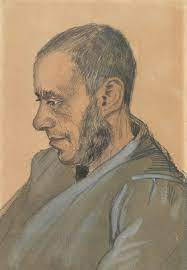

RETRATO DE JOSEF BLOK

Vincent Willem van Gogh (Zundert, Países Bajos, 30 de marzo de1853-Auvers-sur-Oise,
Francia, 29 de julio de 1890) fue un pintor neerlandés, uno de los principales exponentes
del postimpresionismo. Pintó 900 cuadros (de ellos 27 autorretratos y 148 acuarelas) y 1.600 dibujos.
La figura central en su vida fue su hermano menor Theo, quien continua y desinteresadamente le prestó
apoyo financiero. La gran amistad entre ellos está documentada en las numerosas cartas que se intercambiaron
desde agosto de 1872. Para Theo fueron unas 650 de sus 800 cartas conservadas; las otras son correspondencia
con amigos y familiares. A pesar que desde muy joven tuvo inclinación hacia el dibujo, su primer trabajo fue
en una galería de arte. Más tarde se convirtió en pastor y en 1879, a la edad de 26 años, se marchó como misionero
a una región minera de Bélgica, donde comenzó a dibujar a la gente de la comunidad local. En 1885 pintó su primera
gran obra Los comedores de patatas, en ese momento su paleta se componía de tonos sombríos de tierra. La luz de
colores vivos por la que es conocido surgió en obras posteriores, cuando se trasladó al sur de Francia consiguiendo
su plenitud durante su estancia en Arles en 1888. La calidad de su obra sólo fue reconocida después de su muerte
considerándose uno de los grandes maestros de la pintura. Tuvo una gran influencia en el arte del siglo XX, especialmente
entre los expresionistas alemanes y los fauvistas como Derain, Vlaminck y Kees Van Dongen. Sufrió frecuentes brotes de
una enfermedad mental a lo largo de su vida, que le llevó a producirse una herida de bala que acabó con su vida a la edad
de 37 años. A pesar de que existe una tendencia general a especular que su enfermedad mental influyese en su pintura, el
crítico de arte Robert Hughes cree que las obras del artista están ejecutadas con un completo control.